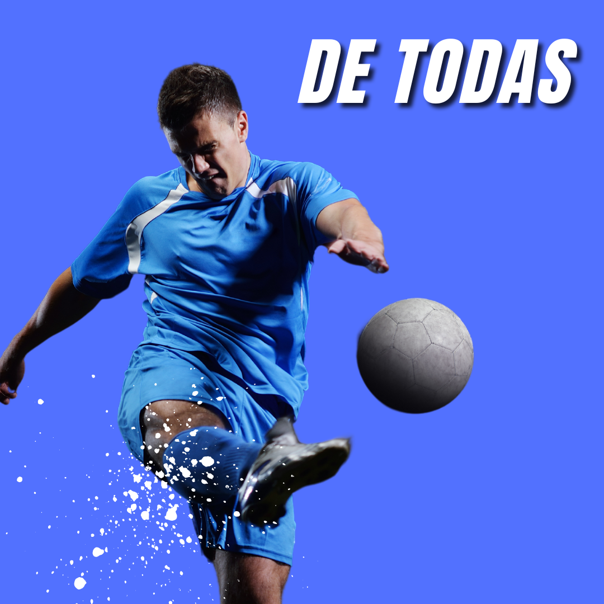

Biomecánica
- Optimización técnica
- Corrección postural
- Mejora del rendimiento
Prevención de Lesiones
- Fortalecimiento muscular
- Movilidad y flexibilidad
- Técnicas de recuperación
Preparación Física
- Planificación de entrenamientos
- Resistencia y fuerza
- Trabajo de velocidad
Alto Rendimiento
- Entrenamiento específico
- Análisis de rendimiento
- Supervisión profesional
La Importancia de la Tecnificación Deportiva
La tecnificación deportiva es clave para maximizar el rendimiento de los atletas. Mediante un enfoque basado en la biomecánica y el análisis técnico, los deportistas pueden perfeccionar su ejecución y prevenir lesiones.
Un programa adecuado de tecnificación ayuda a mejorar la eficiencia de los movimientos, optimizar la fuerza y potenciar la resistencia, garantizando un desarrollo integral en cada disciplina deportiva.
Facundo Freire - Especialista en Tecnificación Deportiva
Facundo Freire es profesor de educación física y licenciado en entrenamiento deportivo. Especializado en tecnificación deportiva, cuenta con una amplia experiencia en la optimización del rendimiento de atletas de alto nivel. Su enfoque combina análisis biomecánico, prevención de lesiones y estrategias avanzadas de entrenamiento para lograr resultados sobresalientes en cada deportista.